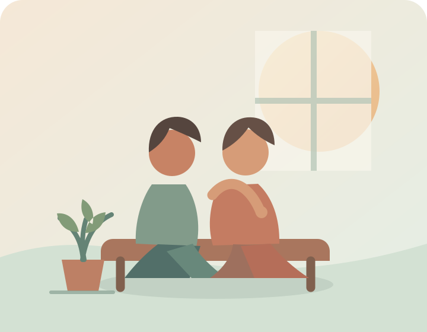

Sinais possíveis
Tristeza ou vazio persistente, perda de interesse, cansaço, alterações no sono ou apetite, dificuldade de concentração e sentimentos de culpa podem ocorrer.
Informação, acolhimento e cuidado
Entenda depressão e ansiedade, reconheça quando procurar apoio e explore o que os dados disponíveis mostram sobre o Brasil.
Comece por aqui
01 · Compreender
É uma condição de saúde que pode afetar humor, pensamentos, corpo, relações e rotina. Não é fraqueza, preguiça ou falta de força de vontade.
Tristeza ou vazio persistente, perda de interesse, cansaço, alterações no sono ou apetite, dificuldade de concentração e sentimentos de culpa podem ocorrer.
Não existe uma causa única. Fatores biológicos, experiências de vida, condições sociais e saúde física podem se combinar de formas diferentes.
Há opções de cuidado, como acompanhamento psicológico, avaliação médica e, quando indicado, medicamentos. O plano é individual.
Os sinais variam entre pessoas e não confirmam diagnóstico. A avaliação deve ser feita por profissional qualificado.
02 · Diferenciar sem julgar
Sentir ansiedade em algumas situações é parte da vida. Quando o medo ou a preocupação são intensos, persistentes e atrapalham a rotina, pode ser importante conversar com um profissional.
São condições diferentes, embora alguns sinais se sobreponham. Só uma avaliação profissional pode identificar o que está acontecendo e orientar o cuidado.
03 · Vozes públicas
Falar da própria experiência pode ajudar a reduzir o estigma. Estes trechos são traduções curtas de entrevistas públicas; cada história é individual e não representa todas as vivências.

“Eu estava arrasado e deprimido.”
O ator falou publicamente sobre ter vivido depressão em uma fase difícil da vida.
Ler a entrevista (CBS News)Foto: Harald Krichel / WikiPortraits · Wikimedia Commons · créditos · CC BY-SA 4.0.

“Eu estava deprimida, ansiosa. Comecei a ter ataques de pânico.”
A cantora e atriz descreveu dificuldades de saúde mental e contou que fez terapia.
Ler a entrevista (ABC News)Foto: Frank Sun / WikiPortraits · Wikimedia Commons · créditos · CC BY-SA 4.0.

“O boxe me controlava mentalmente.”
Em entrevista, o humorista disse que o esporte o ajudava a lidar com a depressão. Atividade física pode apoiar o bem-estar, mas não substitui cuidado profissional.
Ler a entrevista (CNN Brasil)Foto: Humor Multishow / Wikimedia Commons · créditos · CC BY 3.0.

“Tive muitas crises de pânico.”
A cantora contou que recebeu diagnóstico de depressão em 2016, iniciou tratamento e enfrentou preconceito.
Ler a entrevista (Band)Foto: Teca Lamboglia / Wikimedia Commons · créditos · CC BY 2.0.

“Você deixa de ficar confortável em você.”
Em relato sobre depressão e síndrome do pânico, o padre descreveu como a condição afetava sua relação consigo mesmo.
Ler a entrevista (UOL)Foto: Humor Multishow / Wikimedia Commons · créditos · CC BY 3.0.
Relato 1 de 5
Relatos de figuras públicas podem abrir conversas, mas não substituem informação clínica nem orientação profissional.
04 · Panorama brasileiro
Percentual de adultos (18 anos ou mais) que relataram diagnóstico de depressão por profissional de saúde mental, segundo a PNS 2019.
Contornos estaduais: Brazilian States TopoJSON (MIT).
Selecione um estado para ver o percentual e o intervalo de confiança.
A PNS 2019 publicou a prevalência de diagnóstico de depressão por UF, mas não oferece uma medida equivalente de transtornos de ansiedade por estado. Para evitar comparações enganosas, o mapa mostra ansiedade como dado não disponível nessa mesma pesquisa, em vez de atribuir estimativas sem base comparável. Estudos modelados podem usar métodos e definições diferentes.
Como ler: são diagnósticos relatados pelos entrevistados, não a totalidade das pessoas que podem estar vivendo com depressão. Os dados são de 2019, não uma estimativa atual.
Fonte: Pesquisa Nacional de Saúde (PNS) 2019. Artigo e tabela por UF · IBGE — PNS.
05 · Apoiar
06 · Caminhos de cuidado
Você pode procurar orientação na rede pública de saúde ou conversar com um serviço de apoio emocional.
A Unidade Básica de Saúde pode ser um primeiro lugar para conversar com uma equipe e receber orientação. Os Centros de Atenção Psicossocial acolhem pessoas em sofrimento psíquico; é possível procurar um CAPS espontaneamente ou por encaminhamento.
Se alguém precisa de atendimento imediato, procure uma UPA ou pronto-socorro. Em uma emergência, ligue para o SAMU pelo número 192.
O CVV oferece apoio emocional gratuito pelo telefone 188, 24 horas por dia. Esse serviço é diferente do atendimento de emergência médica.
Fontes: Ministério da Saúde — CAPS · SAMU 192 · Prevenção e apoio emocional.
Você merece apoio
Converse com alguém de confiança ou procure uma Unidade Básica de Saúde (UBS). Um profissional pode orientar os próximos passos.